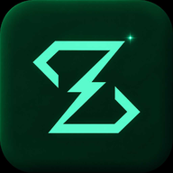

Programa desde tu celular.
Zyk.ia Studio es tu espacio móvil para importar proyectos ZIP y trabajar con tu proveedor de IA.
Descargar APK de prueba ↓Conocer Studio →Android · versión 0.63.3 de prueba · Android solicita confirmación para instalar.